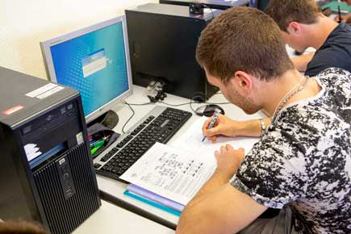
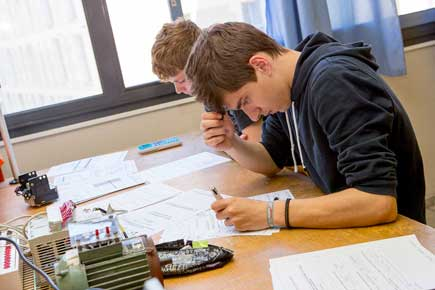
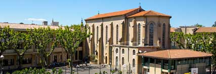

Le Lycée Professionnel La Salle
Le choix d'une orientation en Lycée Professionnel n’est pas un choix par défaut. Ce doit être le fruit d’ une décision réfléchie mûrie durant les années collège. Les filières à dominante professionnelle sont adaptées aux jeunes souhaitant se rapprocher du monde du monde de l’Entreprise sans négliger pour autant les matières générales. Elles permettent un épanouissement par la pratique et par la découverte du monde professionnel au travers de 6 à 8 semaines de stage par an. Nos secteurs d’activités sont l’électricité, les automatismes, l’informatique, les systèmes numériques, l’électronique, les alarmes, la vidéosurveillance … Ils se déclinent en 2 bacs professionnels (MELEC et SN) et 1 CAP (PRO Eléc)
Les enjeux du lycée professionnel
Entrer dans une filière professionnelle, c’est avoir à l’esprit que la poursuite d’études est possible. Ainsi, les élèves de CAP pourront accéder au Bac professionnel et ceux du Bac professionnel auront toutes les aptitudes pour aborder le BTS. Les aménagements pédagogiques et les accompagnements favoriseront cette poursuite de scolarité. Tout sera mis en œuvre pour la réussite de chacun.

Les études à La Salle Avignon
Nous nous attachons à tout mettre en œuvre pour que chaque jeune puisse trouver sa voie vers son succès, sa réussite. Une attention à la personne est indispensable pour permettre de répondre aux besoins de tous. Enseigner ce n’est pas choisir l’élève mais c’est faire en sorte que l’élève vous choisisse. C’est ainsi que nous le rendons acteur de sa construction, c’est ainsi que nous vivons notre projet éducatif. Nous sommes soucieux d'intégrer nos élèves afin qu'ils puissent s’épanouir et s'investir pleinement dans leur formation. C'est dans cet objectif que, dès le 1er jour de la rentrée, nous partons pour 3 jours vivre le "Trophée La Salle". Ce challenge, basé sur des activités artistiques, culturelles et sportives, permet aux élèves, accompagnés des enseignants, d'apprendre à se connaître très rapidement. Ces temps de partage favorisent l'échange en remplaçant, l'espace de trois jours, la relation "enseignant / enseigné" par la relation humaine, ciment de notre fonctionnement.
L'auto-école "La Salle"
Une première en France que la convention mise en place entre notre établissement et une auto-école basée sur l’importance que nous donnons au permis de conduire pour une bonne insertion professionnelle. Cette formation s’intègre dans le parcours scolaire comme un élément d’éducation à la citoyenneté et de construction d’adultes responsables. A ce titre, elle fait partie de l’emploi du temps.

La dimension pastorale au lycée La Salle Avignon

Notre désir, à la suite des Frères des Ecoles Chrétiennes, est de proposer aux jeunes générations une éducation marquée par la Foi Chrétienne. A chaque jeune qui nous rejoint, nous disons : « je crois en toi, j’espère avec toi et je t’aime comme tu es ». Il nous revient ensuite de nous adapter à chacun pour mieux le servir. Notre communauté éducative, au service du jeune, permet un climat de respect, d’estime, de confiance et d’attention à l’autre. De cette dimension jaillit la Fraternité, création d’un foyer de vie.